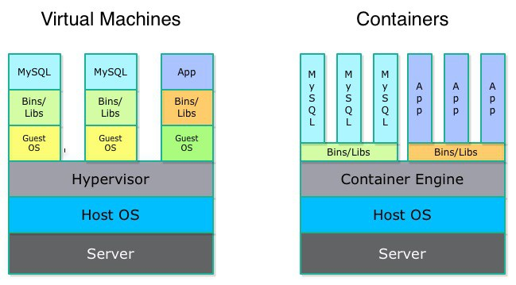
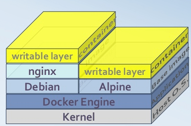
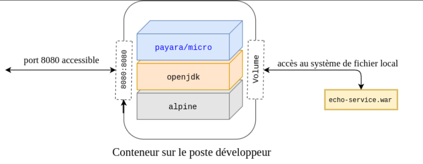
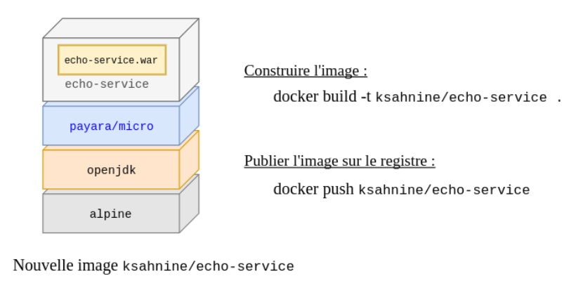

Docker — #2018-3
Au programme :
- Quelques concepts
- Démo : du dev au cloud
- Démo : Docker pour le développeur
Virtual Machines vs containers

Docker = OS level virtualization
VM = machine level virtualization
Images et conteneurs

Image = snapshot de systèmes de fichiers
Conteneur = instance d'une image
Exemple d'app dockerisée sur le poste de dev

Exemple de fabrication d'une app dockerisée

L'image embarque ses dépendances